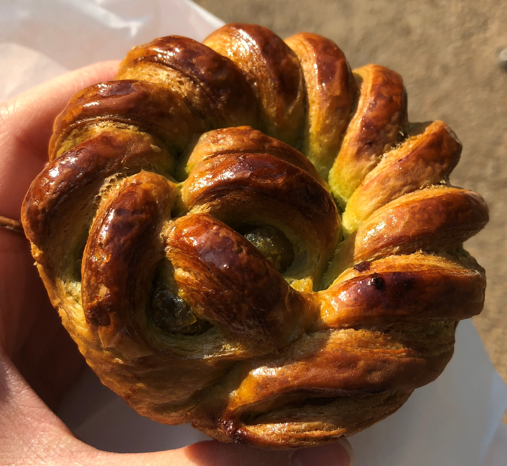
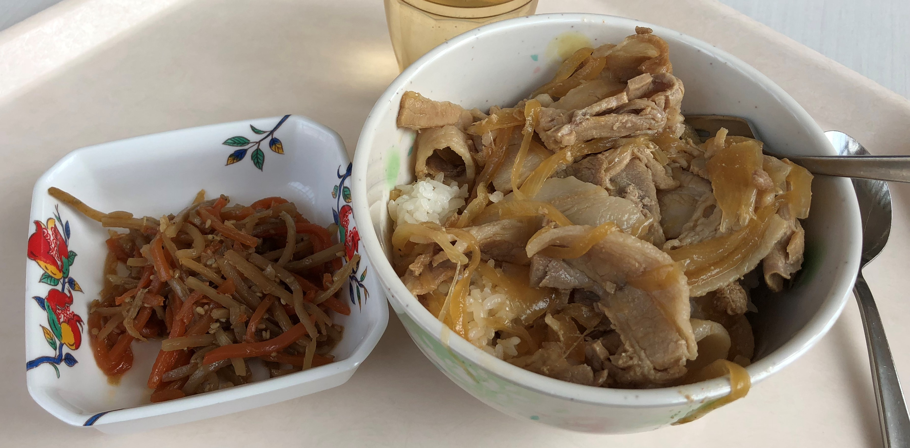
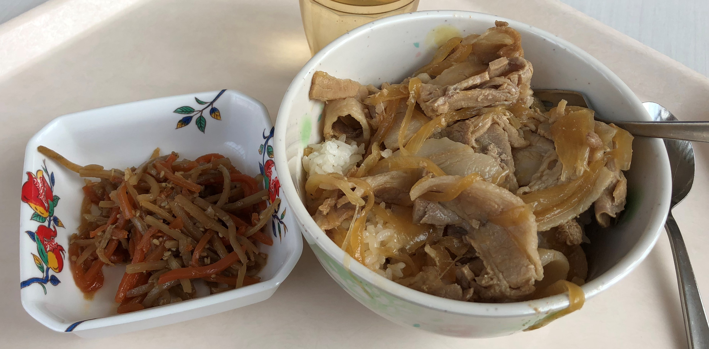

Cherry Blossoms at International Christian University
国際基督教大学の桜
March 27, 2018
I woke up at the unfortunate hour of 4 am, but it just so happens that the city wakes up early too. Trains start moving around 5 in the morning, and it's already bright outside at this time. The hotel I'm staying at, Citytel, is a business hotel located near the Musashisakai Station. The director of the Japan UCEAP Study Center described Musashisakai as the "countryside of Tokyo" because of it's suburban nature.
The mere existence of business hotels is indicative of Japanese work culture. They are meant for long nights, when someone works so late that they have missed all the trains and need last minute lodging. They aren't cheap either, I paid around $75 per night, and it's both less aesthetically appealing and less comfortable than Motel 6.
The mere existence of business hotels is indicative of Japanese work culture. They are meant for long nights, when someone works so late that they have missed all the trains and need last minute lodging. They aren't cheap either, I paid around $75 per night, and it's both less aesthetically appealing and less comfortable than Motel 6.

ホテルの近くに桜がある！墓地の桜だ。
My hotel is right next to a cemetery, which had many beautiful sakura trees

部屋からの景色
Early morning view of the station from my hotel room
At 8am, the sounds of the city are fascinating. Musical jingles are constantly played to indicate the train arrivals. Announcements that I don't understand are loudly broadcasted in polite Japanese. Despite the busyness of the morning, it is oddly quiet. Only the echoing announcements and the solemn clacking of heels on pavement ring through the square, as men and women in suits stream toward the station.
It feels odd to walk in the city during this rush hour. Everyone is walking purposefully toward the station. I am walking away from it. I went to multiple convenience stores, meandering in and out of bakeries in search for some breakfast. Then, I explored the suburbs, walking through narrow streets, taking long lingering looks at the plants decorating house fronts, the net of electrical wires hanging above, and the clinics and stores. Although the streets feel very suburban, every other house is a home business. Signs indicating childcare, restaurants, cleaning, hair styling, and clinics are posted on house fronts all the way down the street.
It feels odd to walk in the city during this rush hour. Everyone is walking purposefully toward the station. I am walking away from it. I went to multiple convenience stores, meandering in and out of bakeries in search for some breakfast. Then, I explored the suburbs, walking through narrow streets, taking long lingering looks at the plants decorating house fronts, the net of electrical wires hanging above, and the clinics and stores. Although the streets feel very suburban, every other house is a home business. Signs indicating childcare, restaurants, cleaning, hair styling, and clinics are posted on house fronts all the way down the street.

東京の郊外
Tokyo Suburb
今朝の朝ごはん。日本のパンが好き！
My breakfast this morning.
I'm here in Musashisakai for orientation at International Christian University. It's currently sakura season, and sakura are in full bloom in Tokyo. There is one sakura lined road that is particularly beautiful at ICU.
 

We also ate at ICU's dining commons for lunch. This is shogayaki-don (ginger pork) and was delicious!